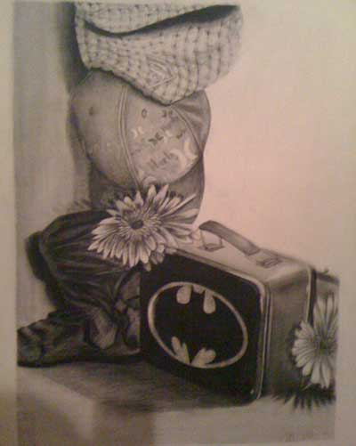
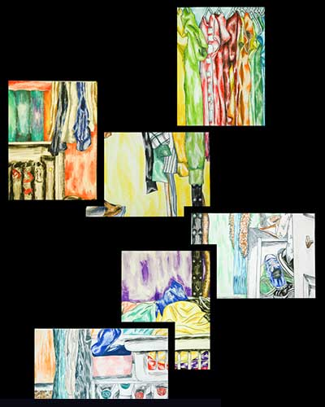
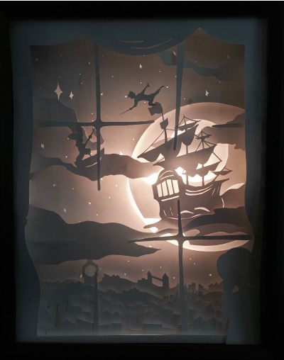

This page is dedicated to my exploration in fine art mediums. The compositions on this page range through many years of my studies in painting and drawing, to working with charcoal and etching and ink. The pieces available for viewing now are some of my oldest works, it is exciting to me to see how my skills and style have changed throughout the years.
 I do believe a picture is worth a thousand words. I have learned so much about myself by contemplating the scenes and objects I choose to depict in my art. Art can be a great tool for communication, and we can learn so much about each other, different cultures and civilizations by studying their art. I'm excited to continue working with new mediums and elements to create my art and designs.
